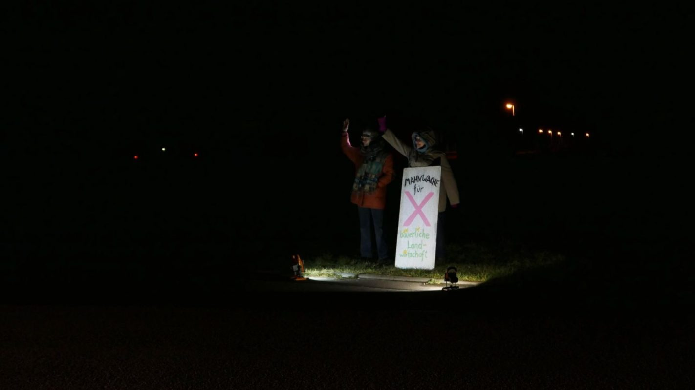
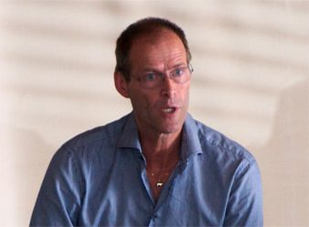

Heiligabend draussen vor der Tür

Mahnwache.
Heiligabend 2018, 17.00 Uhr.
Stille Nacht, stockfinster und eiskalt.
Vor dem Tor der Ferkelfabrik am Tollensetal steht Hannah.
Ein zarter Gestank erinnert an 10.000 Sauen
nur knapp zweihundert Meter hinter ihr
abgeschottet in schwülem ätzenden Gestank.
Vor 12 Jahren erschien uns in der Storchenbar Alt Tellin:
Adrianus Maria Straathof (Schweinefabrikant).
Am Halskettchen ein goldenes Ferkel.

Er ist verschwunden.
Und hat eine Vision hinterlassen:
https://partnerschaft.lfd-holding.com/
Bäuerliche Strukturen sollen gerettet werden.
Familienbetriebe...
in denen garantiert kein Heiland geboren werden soll.
Futterkrippen ersetzt durch Rohrsysteme, Kosmonautennahrung für Außerirdische.
Die nächste Mahnwache ist übrigens am Sylvesterabend.
Hannah wird wie immer ab 17.00 Uhr eine halbe Stunde vor der Tür der LFD stehen.
Wer sich an diesem Jahresabschluss beteiligen will, ist herzlich eingeladen.